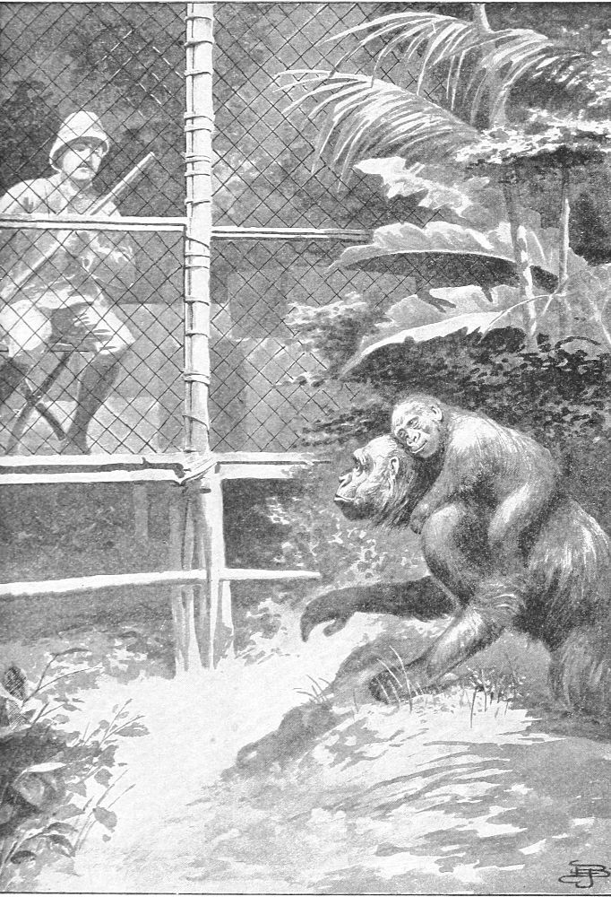

Othello and Other Gorillas—Othello and Moses—Gorilla Visitors—Gorilla Mother and Child—Scarcity of Gorillas—Unauthentic Tales
While I was living in my cage in the jungle I secured the young gorilla to whom I gave the name Othello. He was about six months old, strong, hardy, and robust. I found him to be a fine subject for study and made the best use of him for that purpose. I have elsewhere described his character, but his illness and death are matters of interest.
At noon on the day of his decease he appeared to be quite well and in fine humor. He was turning somersaults and playing like a child with a native boy. He evinced much interest in his play, and his actions indicated that it gave him pleasure; but his face never once betrayed the fact. It was amusing to see him with the actions of a romping child and the face of a cynic.
He was supplied with plenty of his favorite food, had a good appetite, and ate with a relish. Just after noon I sent the boy on an errand. Near the middle of the afternoon I observed that Othello was ill. He declined to eat or drink and lay on his back on the ground, with his arms under his head as a pillow. I tried to induce him to walk with me, to play, or to sit up, but he refused. By four o’clock he was very ill. He rolled from side to side and groaned in evident pain. He kept one hand upon his stomach, where the pain appeared to be located. He displayed all the symptoms of gastric poisoning, and I have reason to believe now that the boy had given him poison. I should regret to foster this suspicion against an innocent person, but it is based upon certain facts that I have learned since that time.
While I sat in my cage watching Othello, who lay on the ground a short distance away, I discovered a native approaching him from the jungle. The man had an uplifted spear in his hand, as if in the act of hurling it at something. He had not seen me, but it did not for a moment occur to me that he had designs upon my pet. I spoke to him in the native language, whereupon he explained that he had seen the young gorilla and suspected that there was an old one close at hand, and being in fear of an attack, he was prepared. He said he was not afraid of a little one, but desired to capture him. I informed him that the gorilla was ill. He made an examination and assured me that Othello would die.
The man departed, and Othello continued to grow worse. His sighing and groaning were really touching. I gave him an emetic, which produced good results. I also used some vaporoles to resuscitate him, but my skill was not sufficient to meet the demands of his case. His conduct was so like that of a human being that it deeply impressed me, and being alone with him in the silence of the dreary forest at the time of his death, the scene had a touch of sadness that impressed me with a deeper sense of its reality. Moses watched the dying ape as if he knew what death meant. He showed no signs of regret, but his manner was such as to suggest that he knew it was a trying hour.
Othello died just before sunset, but for a long time prior to this he was unconscious. The only movements made by him were spasmodic actions caused by pain. The fixed and vacant stare of his eyes in his last hour was so like that of man in the hour of dissolution that no one could look upon the scene and fail to realize the solemn fact that this was death. The next day I dissected him and prepared the skin and the skeleton to bring home with me. They are now, with those of Moses and others, in the Museum of the University of Toronto.
When I first secured this ape and brought him to my house in the bush, he was placed on the ground a few feet from my cage. Near him were laid some bananas and sugarcane belonging to Moses, who had not yet seen the stranger. The gorilla was in a box with one side open, so that he could easily be seen. My purpose was to see how each would act on discovering the other. When Moses observed the food he proceeded to help himself. On seeing the gorilla he paused a moment and gave me an alarm. He was not himself deterred from taking a banana. He seized one and retreated. While he was eating the banana, I took the gorilla from the cage and set him on the ground by it. I petted him and gave him some food. Moses looked on but did not interfere.
When I returned to my cage Moses proceeded to investigate the new ape. He approached slowly and cautiously within about three feet of it. He walked around the gorilla a couple of times, keeping his face towards it, and gradually getting a little nearer. At length he came up within a few inches of one side of the gorilla and stopped. He stood almost on tiptoe, with only the ends of his fingers touching the ground. The gorilla continued to eat his food without so much as giving Moses a look. Moses placed his mouth near the ear of the gorilla and gave one terrific yell. The gorilla did not flinch or even turn his eyes. Moses stood for a moment looking as if in surprise that he had made no impression. After this time he made some friendly overtures to the gorilla, but the latter did not entertain them with favor, beyond maintaining terms of peace. They never quarreled, but Othello always treated Moses as an inferior. I do not know if he entertained a real feeling of contempt, but his manner was haughty and condescending.
There were but few articles of food that he and Moses liked in common, and, therefore, they had no occasion to quarrel; but they never played together or cultivated any friendly terms, as the chimpanzees did among themselves. This may have been due to the fact that the gorilla was so exclusive in his demeanor towards the chimpanzee as to forbid all attempts of the latter to become intimate. The chimpanzee by nature is more sociable and is fond of human society. He imitates the actions of man in many things and quickly adapts himself to new conditions, while the gorilla is selfish and retiring. He can seldom be reconciled to human society. He does not imitate man nor readily yield to the influence of civilization.
One special trait of the gorilla which I wish to emphasize is that he is one of the most taciturn of all the family. This fact does not confirm my theory as to their faculty of speech; but it is a fact, so far as I observed, although the natives say that he is as loquacious as the chimpanzee. Among the specimens that I have studied, both wild and in captivity, I have never heard but four sounds that differed from each other, and of these only two could properly be defined as speech. I do not include the screaming sound described in another chapter. I have not been able, so far, to translate the sounds that I have heard, and they cannot be spelled with our letters.
There is one sound which Othello often used. It was not a speech sound, but a kind of whine, always coupled with a deep sigh. When left alone for a time he became oppressed with solitude. At such times he often heaved a deep sigh and uttered this strange sound. The tone and manner strongly appealed to the feelings of others, and while he did not appear to address it to any one or have any design in making it, it always touched a sympathetic chord, and I was sometimes tempted to release him. Another sound which was not within the pale of speech was a kind of grumbling sound. This frequently occurred when he was eating. It was not exactly a growl, but a kind of complaint. Twice I heard this same sound made by wild ones in the forest near my cage. The only thing that I can compare it to is the habit that cats have of growling while eating. It appears to be done only when something is near. It is possibly intended to deter others from trying to take the food.
During my life in the cage I saw twenty-two gorillas; but I shall describe only a few of them, as their actions in most instances were similar. The first one that I had the pleasure of seeing in the jungle came within a few yards of the cage before it was yet in order to receive. He was exactly half grown. He must have been attracted by the noise made in putting the cage together. He advanced with caution, and when I discovered him he was peering through the bushes, as if to ascertain the cause of the sounds. When he saw me, he tarried only a few seconds and hurried off into the jungle. I did not disturb or shoot at him, because I desired him to return.
On the third day after I went to live in the cage a family of ten gorillas was seen to cross an open space along the back of a batch of plantains near one of the villages. A small native boy was within about twenty yards of them when they crossed the path in front of him. A few minutes later I was notified of their vicinity. I took my rifle and followed them into the jungle until I lost the trail. A few hours after this they were again seen by some natives not far away from my cage, but they did not come near enough to be seen or heard. The next day a family came within some thirty yards of the cage. The bush was so dense that I could not see them, but I could distinguish four or five voices. They seemed to be engaged in a broil of some kind. I suppose it was the family that had been seen the day before. The second night after that I heard the screams of one in the forest some distance from me, but I do not know whether it was the king of this family or another.
One day as I sat alone a young gorilla, perhaps five years old, came within six or seven yards of the cage and took a peep. I do not know whether or not he was aware of its being there until he was so near. He stood for a time, almost erect, with one hand holding on to a bough. His lower lip was relaxed, showing the red line mentioned elsewhere, and the end of his tongue could be seen between his parted lips. He did not evince either fear or anger, but rather appeared to be amazed. I heard him creeping through the bush a few seconds before I saw him. As a rule, they move so stealthily as not to be heard. I know of no other animal of equal size that makes so little noise in going through the forest. During the short time he stood gazing at me I sat still as a statue, and I think he was in doubt as to whether or not I was alive. He did not run away, but after a brief pause turned off at an angle and quietly departed. He lost no time, but made no great haste. The only sound he made was a low grunt, and this he did not repeat.
At another time I heard two making a noise among the plantains near me. I could obtain only a glimpse of them, but as well as I could see they were of good size, being almost grown. They were making a low sound from time to time, something such as I have described; but I could not see them well enough to frame any opinion as to what it meant. They were certainly not quarreling, and I was not sure that they were eating. I afterwards went and looked to see if I could find where they had broken any of the stalks. Their trail was visible through the grass and weeds, but I could find no broken stalk. They were moving at a very leisurely gait and must have been within hearing distance some ten or twelve minutes. They were quite alike in color and appeared to be so in size, although the adult male attains a much greater size than the female.
On one occasion I was standing outside of the cage some twenty yards away, and Moses was sitting on a dead log near by. I turned to him and was in the act of sitting down by him when he gave alarm. This he did in an undertone, apparently to avoid attracting the attention of the thing against which the warning was intended. I looked around, and discovered a gorilla standing not twenty yards away. He had just discovered us. He gazed for a moment and started on, moving obliquely towards the cage. I turned to retreat. At this instant Moses gave one of his piercing screams, which frightened the gorilla and he fled. He changed his course almost at right angles. He was going at a good rate before Moses screamed, but he at once increased his pace.
One day I heard three sounds which a native boy assured me were made by gorillas; they were in different directions from the cage. It was not a scream nor a howl, but somewhat resembled the human voice calling out with a sound like “he-oo!” These sounds were repeated at intervals, but did not appear to be in the relation of call and answer; and the animals making them did not approach each other while calling. The sounds were the same except in volume. One of them appeared to be made by an animal much larger than the animals that had made the two other sounds. I should state that this sound rarely occurred within my hearing during my stay in that part, and with one exception I never heard a gorilla make any loud sound during the day.
Another interesting specimen came prowling through the jungle as if he had lost his way. He found a small opening, or tunnel, which I had cut through the foliage in order to get a better view. Turning into that, he came a few steps towards the cage before he discovered it. Suddenly he stopped and squatted on the ground. He did not sit flat down. For a few seconds he was motionless. So was I. He slowly raised one arm till his hand was above his head, in which position he sat for a few moments. Then he moved his hand quickly forward, as if to motion at me. He did not drop his hand to the ground, but held it for a short time at an angle from his face. Then he slowly let it down till it reached the ground. During this time he kept his eyes fixed on me. At length he raised the other arm and seized hold of a strong bush, by which he slowly drew himself to a half-standing position. Thus he stood for a few seconds, with one hand resting on the ground. Suddenly he turned to one side, parted the bushes, and disappeared. He uttered no sound whatever. Another came within about thirty yards of my retreat. When he discovered me he stopped and stared in a perplexed manner. He turned away to retreat, but, after going a few feet, turned round and sat down on the ground. He remained in that attitude for more than half a minute; then he rose and retired in the direction from which he had come.
The finest specimen of which I ever had a view, and at the same time the best subject for study, was a large female that came within a trifle more than three yards of me. A dog that belonged to one of the native villages had become attached to me and had found its way through the bush to my cage. He frequently came to visit me, and I was always glad to welcome him. One afternoon about three o’clock he came, and I let him into the cage for a while, to pass the usual greetings. I had a bone which I had saved from my last meal, and I threw this out to him in the bush a few feet away from the cage. He seized the bone and began to gnaw it where it lay. His body was in the opening of a rough path cut through the jungle near the cage, but his head was concealed under a clump of leaves. All at once I caught a glimpse of some moving object at the edge of the path on the opposite side of the cage. It was a huge female gorilla carrying a young one on her back.
When I first saw her she was not more than fifty feet away. She was creeping along the edge of the bushes and watching the dog. He was busy with the bone. Her tread was so stealthy that I could not hear the rustling of a leaf. She advanced a few feet, crouched under the edge of the bushes, and cautiously peeped at the dog. Again she advanced a little way, halted, crouched, and peeped. It was evident that her purpose was to attack the dog. Her approach was so wary as to leave no doubt of her dexterity in attacking a foe. Every movement was the embodiment of stealth. Her face wore a look of anxiety with a touch of ferocity. Her movements were quick but accurate, and her advance was not delayed by any indecision. The dog had not discovered her approach. The smell of the bone and the noise he was making with it prevented him from either smelling or hearing her. I could not warn him without alarming her. If he could have seen her before she made the attack, I should have left him to take his chances by flight or by battle. I should have been glad of an opportunity to witness such a combat and to study the actions of the belligerents, but I could not consent to see a friendly dog taken at such disadvantage. She was now rapidly covering the distance between them, and the dog had not yet discovered her.

GORILLA MOTHER WITH YOUNG
When she reached a point within about ten feet of him I determined to break the silence. I cocked my rifle. The click of the trigger caught her attention. I think this was the first that she was aware of my presence. She instantly stopped, turned her face and body towards the cage, and sat down on the ground in front of it. She gave me such a look that I almost felt ashamed for having interfered. She sat for more than a minute staring at me as if she had been transfixed. There was no trace of anger or fear, but the look of surprise was on every feature. I could see her eyes move from my head to my feet. She scanned me as closely as if her purpose had been to purchase me. At length she glanced at the dog who was still gnawing the bone, then turned her head uneasily, as if to search for some way of escape. She then rose and retraced her steps with moderate haste. She did not run, although she lost no time. From time to time she glanced back to see that she was not pursued. She uttered no sound of any kind.
From the time this ape came in view until she departed was about four minutes, and during that time I was afforded an opportunity of studying her in a way that no one else has ever been able to do. I watched every movement of her body, face, and eyes. Being in the cage, I sat with perfect composure and studied her without the fear of attack. With due respect for the temerity of men, I do not believe that any sane man could calmly sit and watch one of these huge beasts approach so near him without feeling a tremor of fear, unless he were protected as I was. Any man would either shoot or retreat, and he could not possibly study the subject with equanimity.
The temptation to shoot her was almost too great to resist, and the desire to capture her babe made it all the more so. But I refrained from firing my gun anywhere within a radius of half a mile or so of my cage, and the natives had agreed to the same thing. My purpose in doing so was to avoid frightening the apes away from the locality. I had been told by the native hunters that if I wounded one of the apes the others would leave the vicinity and perhaps not return for weeks. It is said that if you kill one the others do not notice it so much as if you merely wounded it. Although they seem to be conscious of the fact of the killing, and for the time depart, they will return within a short time.
I could have shot this one with perfect ease and safety. As she approached, her head and breast were towards me; just before she discovered me her left side was in plain view, and when she sat down her breast was perfectly exposed. I could have shot her in the heart, the breast, or the head. Her baby hung upon her back, with its arms embracing her neck and its feet caught under her arms. The cunning little imp saw me long before the mother did, but it gave her no warning of danger. It lay with its cheek resting on the back of her head. Its black face looked as smooth and soft as velvet. Its big, brown eyes were looking straight at me, but it betrayed no sign of fear or even of concern. It really had a pleased expression and wore the nearest approach to a smile I have ever seen on the face of a gorilla. I believe that this is their method of carrying the young and have elsewhere assigned other reasons for this belief. In this case it is not a matter of belief, but one of knowledge, and everything that I have observed conspires to show that this is not an exception to the rule.
During my sojourn of nearly four months in the jungle, where, it was said, a greater number of gorillas could be found than in any other place in the basin of that lake, I saw a total of only twenty-two. I saw one other at a time while I was hunting in the forest. I caught only a glimpse of him, and should not even have done that had not the native guide discovered and pointed him out to me. I believe that no other white man has ever seen an equal number of these animals in a wild state, and it is certain that no other has ever seen them under such favorable conditions for study. I have compared notes with many white men along that part of the coast, but I have never found any reliable man who claims to have seen an equal number. All of them admit that my cage is the best possible means of seeing the apes. I know men who have lived in that part for years and who frequently hunt in the forest for days at a time, but never yet have seen a live gorilla. I met one man on my last voyage who has lived on the edge of the gorilla country forty-nine years, making frequent journeys through the bush and along the water-courses in the interest of trade. This man told me himself that in all that time he had never seen a wild gorilla.
I would cite Mr. James A. Deemin as an expert woodsman and a cool, daring hunter. I have enjoyed several hunts with him. He had traveled, traded, and hunted through the gorilla country for more than thirteen years. He told me that with two exceptions he had never seen a wild gorilla. The first he ever saw was a young one, and he once saw a school of them at a distance. On this latter occasion he was in a canoe and under the cover of the bushes along the side of a river. Unobserved he came near them.
Another man, whose name I am at liberty to mention, is Mr. J. H. Drake of Liverpool. By those who know him Mr. Drake has never been suspected of lacking courage in the hunt or of being given to romance. Yet in many years on the coast he saw but one school of these apes, and that was the same one that Mr. Deemin saw when the two men were traveling together. Others could be cited who testify that it is a rare thing for the most expert woodsman ever to see one of these creatures, and many of the stories told by the casual traveler cannot be received at par. I do not mean to impeach the veracity of others, but the temptation to romance is too great for some people to resist. While we cannot prove the negative by direct evidence, we must be permitted to doubt whether or not these apes are so frequently met in the jungle as they are alleged to be. I will give some reasons for being a sceptic on this subject.
Almost every yarn told by the novice is about the same in substance, and much the same in detail, as those related by others. It seems that most of them meet the same old gorilla, still beating his breast and screaming just as he did forty years ago. The number of gun-barrels that he is accused of having chewed up would make an arsenal sufficient to arm the volunteers. What becomes of all those that are attacked by this fierce monarch of the jungle? Not one of them ever gets killed, and not one of them ever kills the gorilla. Does he merely do this as a bluff and then recede from the attack? Or does he follow it up and seize his victim, tear him open, and drink his blood, as he is supposed to do? How does the victim escape? What becomes of the assailant? Who lives to tell the tale?
The gorilla has good ears, good eyes, and is a skillful bushman. One man walking through the jungle will make more noise than half a dozen gorillas make. The gorilla almost always sees and hears a man before he is seen or heard by him. He is shy and will not attack a man unless wounded or provoked to it. He is always on the alert for danger and rarely comes into the open parts of the bush except for food. He can conceal himself with more ease than a man can and has every advantage in making his escape. I do not believe that he will ever approach a man if he can evade him, but I quite believe that he will make a strong defense if surprised or attacked. I do not believe it possible for any one to see a great number of gorillas in any length of time unless he goes to some one place and remains there, as I have done. Even then he must sometimes wait for days without a trace of one. Silence and patience alone will enable him to see them. When the gorilla sees a man, he retires as soon as he discovers the nature of the thing before him. He does not always flee in haste, as some other animals do, but is more deliberate and cool about it. He will retreat in good order and always starts in time, if possible, to escape without being observed. I trust that I may be pardoned for not being able to believe that every stranger who visits that country is attacked by a gorilla.
Many people labor under the popular delusion that they have seen a gorilla with some itinerant menagerie, and it may be cruel of me to undeceive them. Up to this time there has been but one gorilla landed alive in America. This one arrived in Boston in the autumn of 1897. It was a mere baby and lived only five days. It was exhibited to the public during only a part of two days. The many alleged gorillas offered by mendacious showmen are vile fakes, and the exhibitors should be dealt with as impostors.
I regret that I have been compelled to deny much that has been said, but I make no apology for having done so. In this work I have sought to place these apes before the reader as I have seen them in their native forests. I have not clothed them in fine raiment or invested them with glamour. But I trust that this contribution may be found worthy of the approval of all men who love nature and respect fidelity.
I have the vanity to believe that the methods of study which I have employed will be made the means of farther research by more able students than the writer. In addition to those apes that I have seen in a wild state, I have seen about ten in captivity. Two of those were my own. They were good subjects for study, and I made the best use of them during the time I had them.
While in the jungle I accomplished one thing, in which I feel a just sense of pride, and that was making a gorilla take a portrait of himself. This will interest the amateur in the art of snapshots, and I shall relate it.
I selected a place in the forest where I found some tracks of the animal along the edge of a dense thicket of batuna. Under cover of the foliage I set up two pairs of stakes which were crossed at the tops, and to them was lashed a short pole forming something like a sawbuck. To this was fastened the camera, to which had been attached a trigger made of bamboo splits. One end of a string was fastened to the trigger, and the other end carried under a yoke to a distance of eight feet from the lens. At this point were attached a fresh plantain stalk and a nice bunch of the red fruit of the batuna. Upon this point the camera was focused, the trigger was set, and it was left to await the gorilla. That afternoon I returned to find that something had taken the bait, broken the string, sprung the trigger, and snapped the camera. I developed the plate, but could find no image of anything except the leaves in front of it. I repeated the experiment, with similar results, but could not understand how anything could steal the bait and yet not be shown in the picture. The third time I did this I was gratified to find the image of a gorilla, and also to discover the cause why the other experiments had not succeeded.
The deep shadows of the forest make it difficult to take a photograph without giving it a time exposure, and when the sun is under a cloud or on the wrong side of an object success is quite impossible. The leaves which were shown in the first two plates were only those which were most exposed to the light, and all the lower part of the picture was without detail. In the third trial it could be seen that the sun was shining at the instant of exposure. A part of the body of the gorilla was in the light, but most of it was in the shadow of the leaves above it. The left side of the head and face was quite distinct, so likewise were the left shoulder and arm. The hand and the bait could not have been distinguished except by their context. The right side of the head, the arm, and most of the body were lost in the view. The picture showed that the gorilla had taken the bait with his left hand, and that he was in a crouching posture at the moment.
While the photograph was very poor as a work of art, it was full of interest as an experiment. Although it did not result in getting a good picture, I did not regard the effort as a failure. It shows at least that such a thing is possible, and by careful efforts, often repeated, it could be made a means of obtaining some novel pictures. A little ingenuity would widen the scope of this device and make it possible to photograph birds, elephants, and everything else in the forest. When I return to that place on a like journey I shall carry the scheme into better effect.